Documents¶
ProjeQtOr intègre certaines fonctionnalités GED et vous permet de gérer des documents et de suivre l’évolution des versions de documents. Chaque document ou version de document peut ensuite être lié à un élément de ProjeQtOr (Projet, Activité ou autre).
Un document est un élément de référence qui donne une description d’un projet ou d’un produit.
L’élément document décrit les informations générales.
Le fichier sera stocké dans l’outil sous forme de versions.
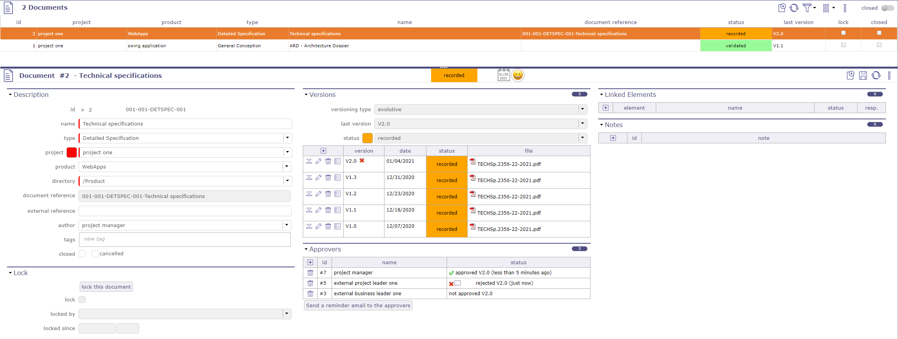
Écran des documents¶
Les répertoires de documents sont accessibles directement dans le menu secondaire
Chaque répertoire est cliquable
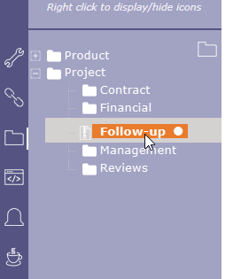
Menu secondaire pour document¶
Avertissement
ProjeQtOr n’intègre pas les fonctionnalités suivantes :
L’indexation en texte intégral des documents, pour rechercher un document à l’aide d’un mot-clé qu’il contient ainsi que l’édition en ligne des documents.
Projet et Produit
Doit concerner soit un projet, un produit, ou les deux.
Si le projet est spécifié, la liste des valeurs du champ « Produit » ne contient que les produits liés au projet sélectionné.
Champ Auteur
Positionné par défaut comme l’utilisateur connecté.
Peut être modifié (par exemple si l’auteur n’est pas l’utilisateur actuel).
Section Verrouillage
Cette section vous permet de gérer le verrouillage des documents afin de les protéger de toute modification ou de l’ajout d’une nouvelle version.
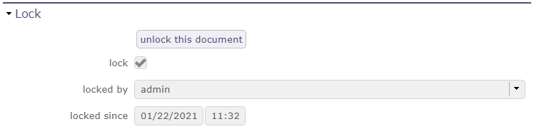
Section verrouillage du document¶
Lorsqu’un document est verrouillé, les champs suivants sont affichés.
Verrouillé : case cochée indique que le document est verrouillé.
Verrouillé par : utilisateur qui a verrouillé le document.
Verrouillé depuis : date et heure du verrouillage du document.
Lorsque le document est verrouillé, il ne peut pas être téléchargé sauf par l’utilisateur qui l’a verrouillé ou un utilisateur avec des privilèges
Seul l’utilisateur qui a verrouillé le document, ou un utilisateur avec des privilèges peut le déverrouiller
Vous pouvez interdire Paramètres globaux
Gestion des versions de document¶
Cette section permet de gérer la liste des versions du document.
La gestion des versions de document permet de conserver différentes versions à chaque évolution du document.
Un document peut évoluer et un nouveau fichier est généré à chaque évolution.
Le type de versionnage doit être défini pour un document.
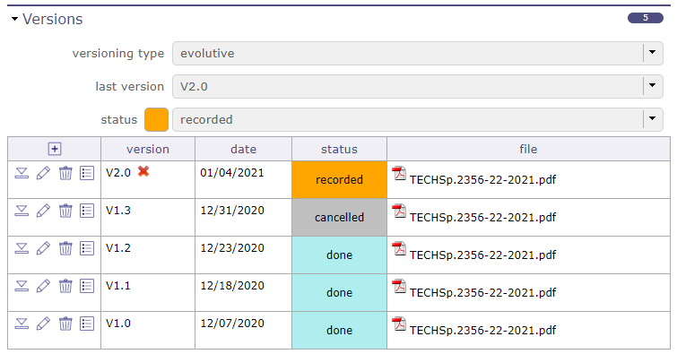
Section versionnage¶
Cliquez sur
 pour ajouter une nouvelle version.
pour ajouter une nouvelle version.Cliquez sur
 pour télécharger le fichier à cette version.
pour télécharger le fichier à cette version.Cliquez sur
 pour modifier une version.
pour modifier une version.Cliquez sur
 pour supprimer une version.
pour supprimer une version.Cliquez sur pour afficher l’historique des approbations pour la version
{kind=link}
Astuce
Vous pouvez faire glisser votre fichier directement sur l’écran.
La fenêtre contextuelle « version du document » s’ouvre automatiquement pour vous permettre de déposer votre fichier dans la fenêtre.
Type de versionnage¶
Un document peut évoluer selon quatre façons définies comme type de versionnage :
Évolutif
La version est au format standard Vx.y.
C’est le type de versionnage le plus couramment utilisé.
Les mises à jour majeures augmentent x et remettent y à zéro.
Les mises à jour mineures augmentent y.
Chronologique
La version est une date.
Ce type de versionnage est couramment utilisé pour les documents périodiques.
Par exemple : tableaux hebdomadaires.
Séquentiel
La version est un numéro séquentiel.
Ce type de versionnage est couramment utilisé pour les documents récurrents.
Par exemple : comptes rendus de réunion.
Personnalisé
La version est définie manuellement.
Ce type de versionnage est couramment utilisé pour les documents externes, lorsque la version n’est pas gérée par l’outil, ou lorsque le format ne peut pas correspondre à un autre type de versionnage.
Visionneuse de documents¶
Visionneuse de documents disponible pour les fichiers image, texte et PDF.
Cliquez sur
pour afficher la fenêtre contextuelle.
Note
Glisser-déposer
Vous pouvez faire glisser votre fichier directement sur l’écran.
La fenêtre contextuelle « version du document » s’ouvre automatiquement pour vous permettre de déposer votre fichier dans la fenêtre.
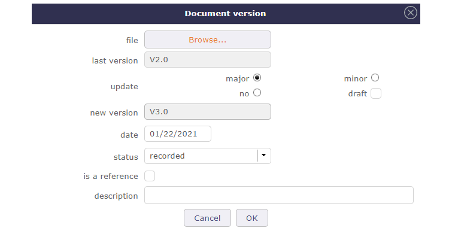
Boîte de dialogue version du document¶
Note
Le nom du fichier téléchargé sera le nom de référence du document affiché dans la section description.
Si vous souhaitez conserver le nom du fichier téléchargé, définissez le paramètre dans les Paramètres globaux
Champ « Mise à jour »
Choisissez le type de versionnement que vous utiliserez sur le dernier document importé.
Les versions majeures apportent de nouvelles fonctionnalités ou restructurent même complètement le document et seront notées v2 par exemple.
Les versions mineures apportent principalement des corrections de bugs ou des ajouts de fonctionnalités secondaires. Ces versions seront alors notées v2.1 par exemple.
Une version peut avoir un statut brouillon, qui peut être supprimé ultérieurement.
Champ « Est une référence »
Doit être coché lorsque la version est validée.
Une seule version peut être la référence d’un document.
La version de référence est affichée en gras dans la liste des versions.
Champ « Description »
Peut être utilisé pour décrire les mises à jour apportées par la version.
Cette icône apparaît lorsque le champ description est renseigné.
{kind=link}
Déplacer la souris sur l’icône affichera le texte de description.
Processus d’approbation¶
Vous pouvez définir des approbateurs pour un document.
Seuls les utilisateurs affectés au projet lié au document peuvent être ajoutés.
Cliquez sur
pour ajouter un approbateurCliquez sur
pour supprimer un approbateur
Les approbateurs
Lorsqu’un approbateur est créé dans la liste, il est également automatiquement ajouté à la dernière version du document.
Lors de l’ajout d’une version au document, les approbateurs sont automatiquement ajoutés à la version.
Chaque approbateur peut voir la liste des documents à approuver sur son écran Aujourd’hui.
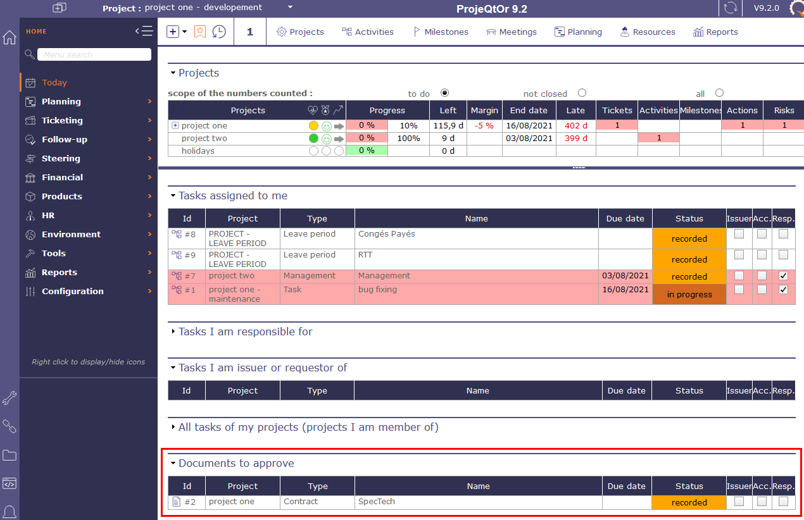
Documents à approuver sur l’écran aujourd’hui¶
Sur l’écran Documents, l’approbateur peut approuver ou rejeter le document.
Tous les approbateurs du document peuvent voir la réponse des autres approbateurs.
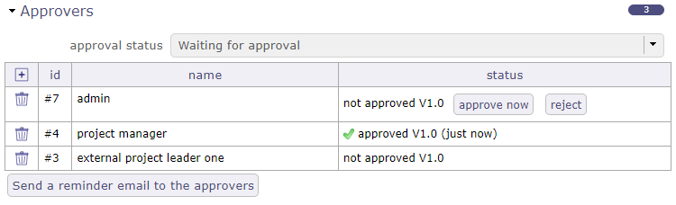
Documents à approuver sur l’écran aujourd’hui¶
Une fois le document approuvé, la ligne est cochée et la date et l’heure de l’approbation sont enregistrées.
Si le document est rejeté, la ligne est alors marquée d’une croix avec la date et la cause du rejet.
Statut d’approbation
Ce statut vous permet de suivre globalement le statut de l’approbation.
Il peut être utilisé dans un filtre, comme tous les autres champs de l’objet document.
calculé selon le statut d’approbation de la dernière version du document et peut prendre les valeurs suivantes :
Sans approbation : si aucun approbateur n’a été ajouté à la liste des approbateurs
Rejeté : si au moins un approbateur a rejeté la version du document
En attente d’approbation : s’il y a au moins un approbateur qui n’a pas approuvé le document et que personne n’a encore rejeté la version du document
Approuvé : si tous les approbateurs ont approuvé le document.
Note
La recherche rapide n’affiche que les documents qui se trouvent dans des répertoires auxquels l’utilisateur a des droits.
Envoyer un e-mail de rappel aux approbateurs
Envoyer un e-mail aux approbateurs qui n’ont pas encore validé le document.
Ceux qui l’ont déjà validé ne recevront pas cet e-mail.
L’envoi sera effectif si une adresse e-mail a été enregistrée pour l’utilisateur.
Répertoire de documents¶
La gestion des répertoires de documents permet de définir une structure pour le stockage des documents.
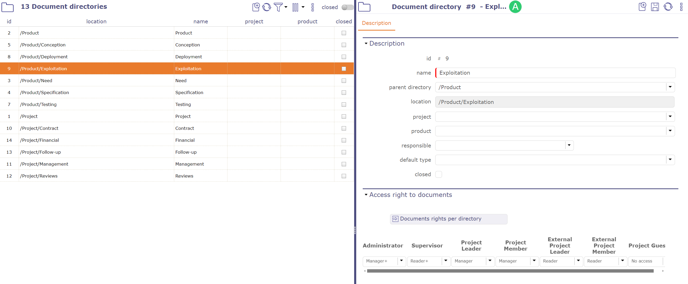
Écran des répertoires de documents¶
Emplacement¶
Les fichiers du document seront stockés dans le dossier défini par les paramètres Racine des documents et Emplacement.
Racine des documents est défini dans l’écran Paramètres globaux.
L’emplacement est automatiquement défini comme « Répertoire parent » / « Nom ».
Produit sera la valeur par défaut pour les nouveaux documents stockés dans ce répertoire.
Si le projet est spécifié, la liste des valeurs contient les produits liés au projet sélectionné.
Si le projet n’est pas spécifié, la liste des valeurs contient tous les produits définis.
Le Type par défaut sera la valeur par défaut pour les nouveaux documents stockés dans ce répertoire.
Droits d’accès aux répertoires¶
La liste des documents n’affiche que les documents qui se trouvent dans des répertoires pour lesquels l’utilisateur a des droits de lecture.
Vous pouvez définir les droits d’accès aux documents selon le profil à chaque niveau de l’arborescence des répertoires de documents.
Il n’y a pas de notion d’héritage des droits vers les sous-répertoires.
Vous définissez pour chaque profil le droit CRUD (créer / lire / mettre à jour / supprimer) sur chaque répertoire.
Les droits définis dans l’écran de droits « Accès aux données dépendantes du projet » ne seront utilisés que comme définition des valeurs par défaut lors de la création d’un répertoire.
Voir aussi
Note
Notez que si un répertoire est dédié à un projet, le profil utilisé pour l’attribution des droits est le profil de l’utilisateur sur ce projet, sinon c’est son profil par défaut.
L’attribution de droits de modification ou de suppression sans attribution de droits de lecture est incohérente et ne sera pas prise en compte.
Explorateur de documents¶
L”Explorateur de documents vous permet de centraliser, organiser et visualiser les documents associés à vos projets au sein d’un même espace.
Il offre une vue structurée de tous les dossiers et documents, facilitant le classement et la gestion. Vous pouvez créer des dossiers, ajouter de nouveaux documents, les organiser selon une hiérarchie de dossiers et accéder rapidement aux détails des documents.
Les fonctions sont les mêmes que sur l’écran des documents.
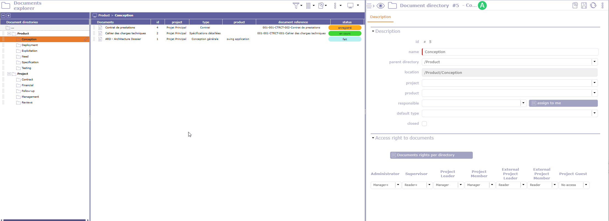
Écran de l’explorateur de documents¶
L’Explorateur inclut également une visionneuse de documents, vous permettant de visualiser les fichiers pris en charge directement, sans les télécharger ni les ouvrir dans une application externe. Cette fonctionnalité d’aperçu facilite la revue rapide des documents et la navigation entre les pages.
Cet écran constitue un point d’accès unique pour gérer et visualiser la documentation du projet tout en conservant une organisation des fichiers claire et structurée.
Vous pouvez utiliser le glisser-déposer pour déplacer vos documents et répertoires vers un autre emplacement.
Cliquez sur  pour basculer l’affichage de la vue détaillée vers la visionneuse de documents.
pour basculer l’affichage de la vue détaillée vers la visionneuse de documents.
Cliquez sur pour basculer l’affichage de la visionneuse de documents vers les détails.
{kind=link}
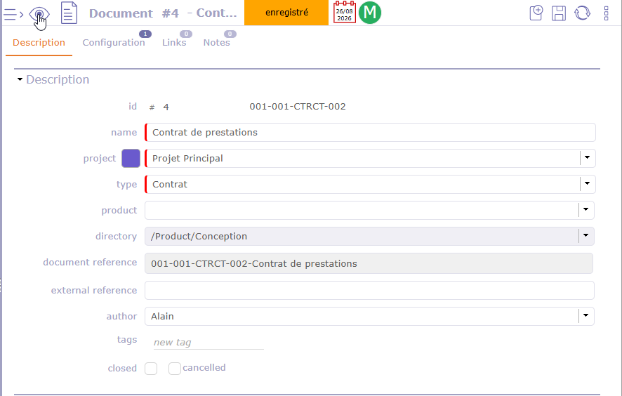
Note
Tous les formats ne sont pas disponibles pour l’aperçu.
Affichage
Cliquez sur  pour sélectionner les colonnes à afficher dans les répertoires de documents ET dans les documents.
pour sélectionner les colonnes à afficher dans les répertoires de documents ET dans les documents.
Export global des documents¶
L’export des documents permet l’extraction des documents au format de fichier .zip.
Le fichier .zip généré sera nommé avec le formatage nomElement_UtilisateurN°ID.zip
Vous pourrez extraire :
Tous les documents d’un répertoire
Tous les documents pour un élément donné (projet, activité, ticket, etc.)
Tous les documents d’un projet et de ses éléments
Tous les documents d’un projet et de ses éléments incluant les sous-projets et les éléments de ces sous-projets.
Cela inclut les fichiers joints en plus des documents.
Extraire les fichiers pour le projet¶
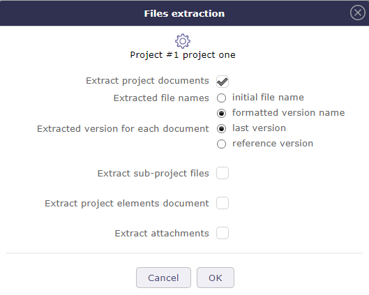
Extraction des fichiers de documents pour le projet¶
{kind=link}
Extraire le document du projet
Tous les documents liés au projet sélectionné seront exportés.
Noms des fichiers extraits
La préservation du nom n’est active que sur les documents.
Le nom initial conserve le nom exact de votre document.
Le nom formaté récupère la référence du document et la version extraite.
Version extraite pour chaque document
Deux possibilités :
Dernière version
Version de référence
Avertissement
La version de référence n’est pas nécessairement la dernière version
Extraire les fichiers des sous-projets
Sans cette option, les sous-projets ne seront pas inclus dans l’extraction.
Extraire les documents des éléments du projet
Chaque élément du projet contenant des documents sera exporté.
Chaque élément aura son propre dossier dans le fichier zip.
Extraire les pièces jointes
Tous les fichiers joints au projet et à ses éléments seront exportés.
Extraire les fichiers pour les répertoires¶
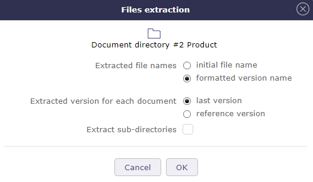
Extraction des fichiers de documents pour les répertoires¶
Les répertoires de documents peuvent être extraits dans leur intégralité.
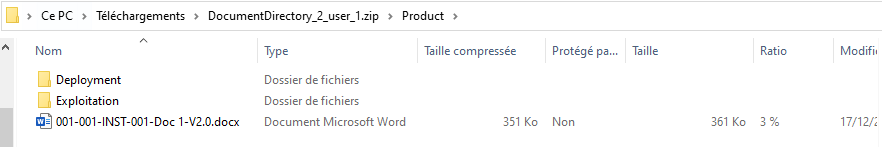
Exemple d’extraction de fichiers pour un répertoire¶
Lors de l’extraction des répertoires incluant les sous-répertoires, on trouve dans le fichier zip généré uniquement les sous-répertoires contenant des documents.
Extraire les noms de fichiers
La préservation du nom n’est active que sur les documents.
Le nom initial conserve le nom exact de votre document.
Le nom formaté récupère la référence du document et la version extraite.
Extraire la version du document
Deux possibilités :
Dernière version
Version de référence
Avertissement
La version de référence n’est pas nécessairement la dernière version
Extraire les sous-répertoires
Sans cette option, les sous-répertoires ne seront pas inclus dans l’extraction.
Extraire pour un élément¶
Les documents et fichiers joints peuvent être extraits d’un élément.
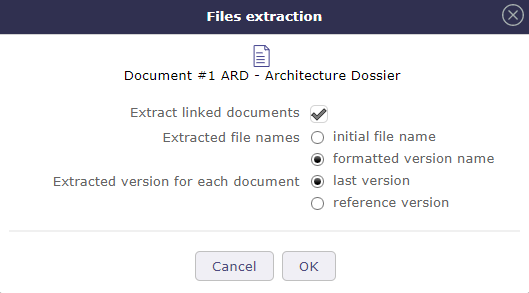
Extraction des fichiers de documents¶
Noms des fichiers extraits
La préservation du nom n’est active que sur les documents.
Le nom initial conserve le nom exact de votre document.
Le nom formaté récupère la référence du document et la version extraite.
Version extraite pour chaque document
Deux possibilités :
Dernière version
Version de référence
Avertissement
La version de référence n’est pas nécessairement la dernière version
Extraire les pièces jointes
Inclure les fichiers joints dans l’extraction
Nomenclature¶
La désignation du produit dans la nomenclature des documents est possible pour prendre en compte la désignation du produit dans la nomenclature des documents avec les nouveaux codes
{PROD} désignation du produit
{PROJ/PROD} le code projet si spécifié, sinon la désignation du produit
{PROD/PROJ} désignation du produit si spécifié, sinon le code projet